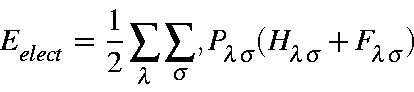

where Pls is the density matrix element connecting atomic orbitals fl and fs.
In practice, the density matrix elements rapidly become small as the interatomic distance increases. Only for atoms which are chemically bonded together will Pls be large. As an example, in propanolamine, the smallest bond order between two chemically bonded atoms is 0.98. Between any two neighboring but non-chemically bound atoms (that is, atoms separated by one atom), the largest bond order is 0.015, and for all other interactions, the bond-orders are very small.
Because the electronic energy is determined by the density matrix, the contribution to the electronic energy arising from density matrix elements between atoms which are not near to each other is small, and becomes very small with increasing distance. The contributions from atoms separated by more than about 10 Ångstroms is quite negligible, and can safely be ignored. From this it follows that the only density matrix terms which need to be considered are those arising from atoms separated by less that 10 Ångstroms. Since the density matrix is constructed from the M.O.s only, then, in LMO theory, the LMOs need only extend over a distance of about 10 Ångstroms from the center of the LMO.